Agnello Rosé D'Été
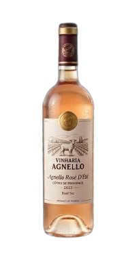
Um rosé leve e aromático, perfeito para dias ensolarados.
Pétalas de Quartz
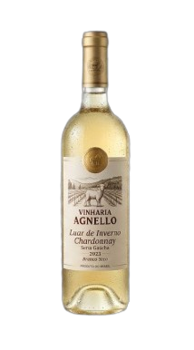
Inspirado na cor rosa clara e brilhante do quartzo místico.
Luar de Inverno Chardonnay
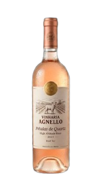
Um branco estruturado, com notas de baunilha e frutas tropicais.
Néctar dos Arcos Sauvignon Blanc
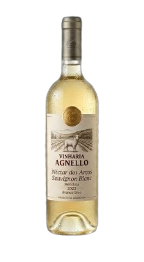
Jovem, herbal e com acidez vibrante.
Legado de Sangue Cabernet Sauvignon
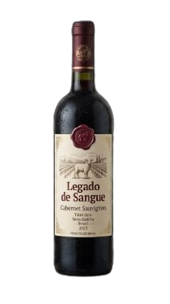
Um tinto seco potente, envelhecido em carvalho.
Alquimia Velha Blend Seco
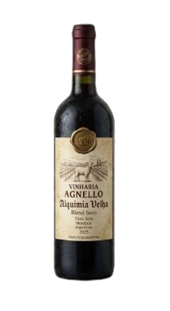
Uma combinação secreta de uvas tintas secas de safra especial.
Andes Eternos Malbec
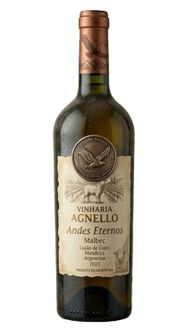
Tradicional da região de Mendoza, intenso e com cor violeta profunda.
Valle del Fuego Syrah
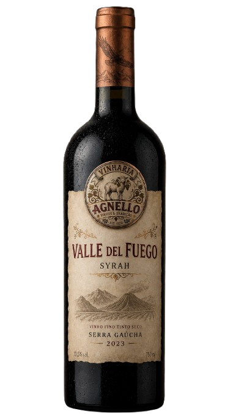
Um argentino robusto, com notas de especiarias e pimenta-preta.
Don Juan Cabernet Franc
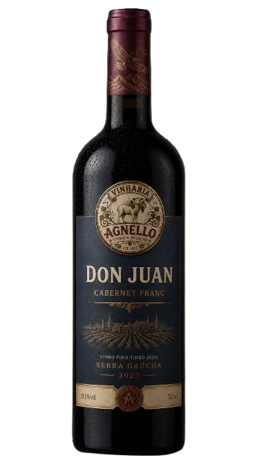
Elegante, complexo e com a alma dos vinhedos de altitude.
Vales de Bento Merlot
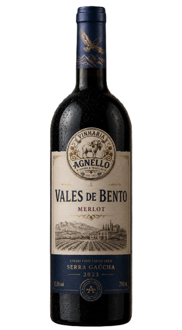
Um abraço direto da Serra Gaúcha, macio e muito frutado.
Terroir da Campanha Tannat
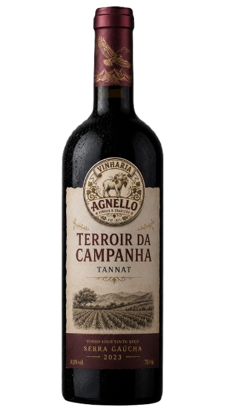
Produzido no extremo sul do Brasil, um vinho potente e de muita personalidade.
Brumas do Sul Pinot Noir
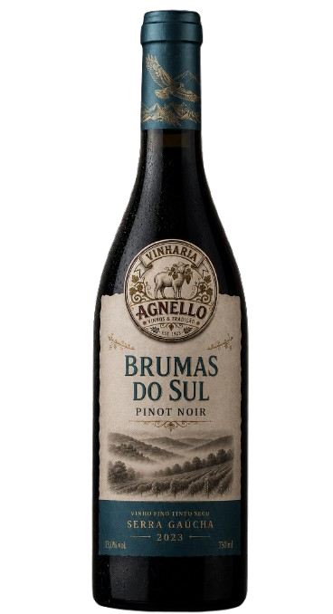
Um tinto brasileiro leve, sofisticado e de aroma complexo.